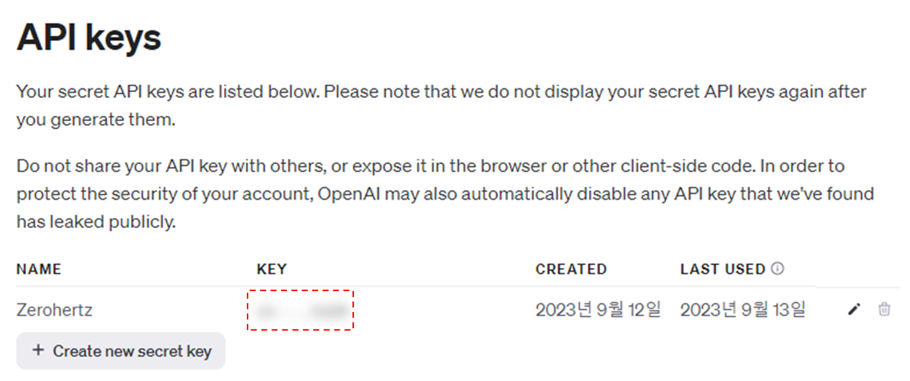
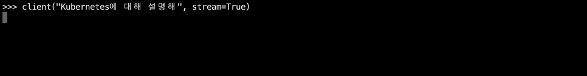
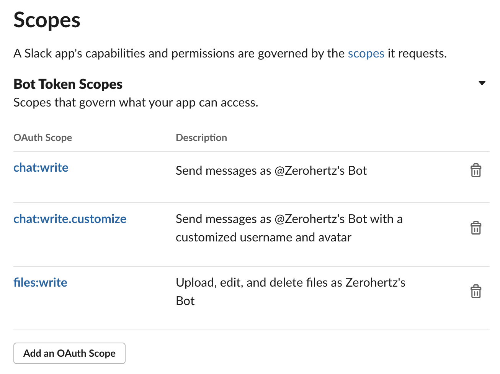
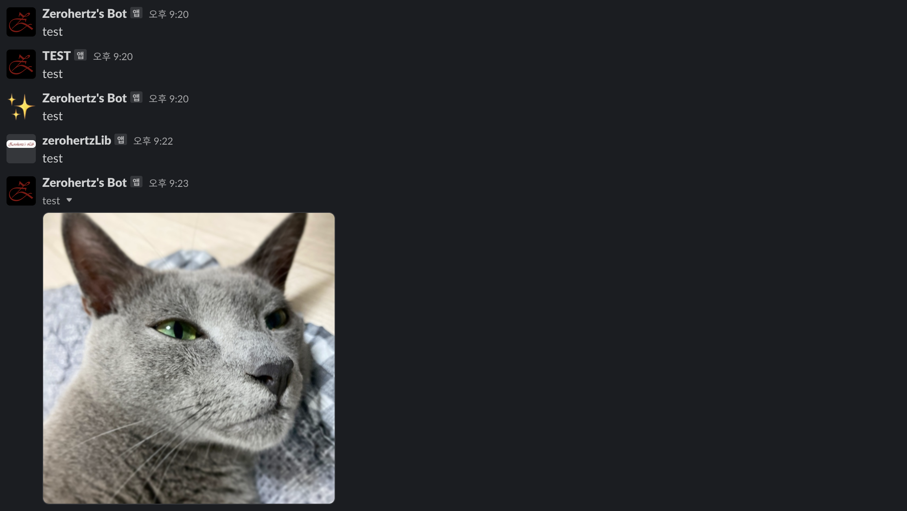

zerohertzLib.api¶
API
다양한 API를 쉽게 사용할 수 있는 class들
- class zerohertzLib.api.Discord(webhook_url)[source]¶
Bases:
objectDiscord Webhook의 data 전송을 위한 class
- Parameters:
webhook_url¶ (
str) – Discord Webhook의 URL
Examples
>>> discord = zz.api.Discord("https://discord.com/api/webhooks/...")
- image(image_path)[source]¶
Discord Webhook을 통해 image 전송
- Parameters:
image_path¶ (
str) – 전송할 image 경로- Returns:
Discord Webhook의 응답
- Return type:
requests.models.Response
Examples
>>> discord = zz.api.Discord("https://discord.com/api/webhooks/...") >>> zz.api.image("test.jpg") <Response [200]>
- class zerohertzLib.api.GitHub(user='Zerohertz', repo='zerohertzLib', token=None, issue=True)[source]¶
Bases:
objectGitHub API를 사용하기 위한 class
- Parameters:
- __call__()[source]¶
API 호출 수행
- Parameters:
lab (
Optional[str]) – 선택할 GitHub repository의 label (issue=False시 error 발생)per_page (
Optional[int]) – 1회 호출 시 출력될 결과의 수
- Returns:
API 호출 결과
- Return type:
List[Dict[str, Any]]
Examples
>>> gh = zz.api.GitHub("Zerohertz", "zerohertzLib", token="ghp_...") >>> fix = gh("fix", 20) >>> len(fix) 20 >>> fix[0].keys() dict_keys(['url', 'repository_url', 'labels_url', 'comments_url', 'events_url', 'html_url', 'id', 'node_id', 'number', 'title', 'user', 'labels', 'state', 'locked', 'assignee', 'assignees', 'milestone', 'comments', 'created_at', 'updated_at', 'closed_at', 'author_association', 'active_lock_reason', 'body', 'reactions', 'timeline_url', 'performed_via_github_app', 'state_reason'])
- class zerohertzLib.api.KoreaInvestment(account_no, path='./')[source]¶
Bases:
object한국투자증권 API를 호출하는 class
- Parameters:
- api_key¶
API Key
- Type:
str
- api_secret¶
API Secret
- Type:
str
Examples
>>> broker = zz.api.KoreaInvestment("00000000-00")
- get_balance(kor=True)[source]¶
주식 계좌 잔고 조회
- Parameters:
kor¶ (
Optional[bool]) – 국내 여부- Returns:
계좌 내역
- Return type:
Dict[str, Dict]
Examples
>>> balance = broker.get_balance() {'output1': [{'pdno': '...', ...}], 'output2': [{'dnca_tot_amt': '...', ...}]} >>> balance["output1"][0]["pdno"] # 종목번호 (뒷 6자리) >>> balance["output1"][0]["prdt_name"] # 종목명 >>> balance["output1"][0]["hldg_qty"] # 보유수량 >>> balance["output1"][0]["pchs_avg_pric"] # 매입평균가격 (매입금액 / 보유수량) >>> balance["output1"][0]["pchs_amt"] # 매입금액 >>> balance["output1"][0]["prpr"] # 현재가 >>> balance["output1"][0]["evlu_amt"] # 평가금액 >>> balance["output1"][0]["evlu_pfls_amt"] # 평가손익금액 (평가금액 - 매입금액) >>> balance["output1"][0]["evlu_pfls_rt"] # 평가손익율 >>> balance["output1"][0]["evlu_erng_rt"] # 평가수익율 >>> balance["output2"][0]["dnca_tot_amt"] # 예수금총금액 >>> balance["output2"][0]["thdt_buy_amt"] # 금일매수금액 >>> balance["output2"][0]["tot_evlu_amt"] # 총평가금액 (유가증권 평가금액 합계금액 + D+2 예수금) >>> balance["output2"][0]["nass_amt"] # 순자산금액 >>> balance["output2"][0]["pchs_amt_smtl_amt"] # 매입금액합계금액 >>> balance["output2"][0]["evlu_amt_smtl_amt"] # 평가금액합계금액 >>> balance["output2"][0]["evlu_pfls_smtl_amt"] # 평가손익합계금액 >>> broker.get_balance(False) {'output1': [], 'output2': {'frcr_pchs_amt1': '...', ...}} {'output1': [{'prdt_name': '...', ...}], 'output2': [{'crcy_cd': 'USD', ...}], 'output3': {'pchs_amt_smtl': '...', ...}}
- get_conclusion()[source]¶
주식 계좌 잔고의 국내 실현손익 조회
- Returns:
잔고 실현손익 조회 결과
- Return type:
Dict[str, Dict]
Examples
>>> conclusion = broker.get_conclusion()
- get_ohlcv(symbol, time_frame='D', start_day='', end_day='', adj_price=True, kor=True)[source]¶
종목 code에 따른 기간별 OHLCV (Open, High, Low, Close, Volume)
- Parameters:
- Returns:
OHLCV (Open, High, Low, Close, Volume)
- Return type:
Dict[str, Dict]
Examples
>>> broker.get_ohlcv("005930") {'output1': {'prdy_vrss': '...', ...}, 'output2': ['stck_bsop_date': '...', ...]} >>> broker.get_ohlcv("AAPL", kor=False) {'output1': {'rsym': '...', ...}, 'output2': ['xymd': '...', ...]}
- get_ohlcvs(symbols, time_frame='D', start_day='', end_day='', adj_price=True, kor=True)[source]¶
여러 종목 code에 따른 기간별 OHLCV (Open, High, Low, Close, Volume)
- Parameters:
- Returns:
Code들에 따른 종목의 이름과 OHLCV (Open, High, Low, Close, Volume)
- Return type:
Tuple[List[str], List[pd.DataFrame]]
Examples
>>> broker.get_ohlcvs(["005930", "035420"], start_day="20221205") (['삼성전자', 'NAVER'], [ Open High Low Close Volume 2022-12-05 60900.0 61100.0 60000.0 60300.0 13767787.0 ... ... ... ... ... ... 2023-12-05 72300.0 72400.0 71500.0 71500.0 4598639.0 [248 rows x 5 columns], Open High Low Close Volume 2022-12-05 187000.0 195000.0 186500.0 191500.0 1224361.0 ... ... ... ... ... ... 2023-12-05 210000.0 216500.0 209500.0 213500.0 454184.0 [248 rows x 5 columns]])
- get_price(symbol, kor=True)[source]¶
주식 현재가 시세
- Parameters:
- Returns:
주식 현재가 시세
- Return type:
Dict[str, Dict]
Examples
>>> samsung = broker.get_price("005930") >>> samsung["output"]["stck_prpr"] # 주식 현재가 >>> samsung["output"]["per"] # PER (Price-to-Earnings Ratio, 주가수익비율) >>> samsung["output"]["pbr"] # PBR (Price-to-Book Ratio, 주가순자산비율) >>> samsung["output"]["eps"] # EPS (Earnings Per Share, 주당순이익) >>> samsung["output"]["bps"] # BPS (Book-value Per Share, 주당순자산가치) >>> samsung["output"]["w52_hgpr"] # 52주일 최고가 >>> samsung["output"]["w52_lwpr"] # 52주일 최저가 >>> apple = broker.get_price("AAPL", kor=False) >>> apple["output"]["last"] # 현재가 >>> apple["output"]["ordy"] # 매수가능여부
- response2ohlcv(response)[source]¶
get_ohlcv에 의한 응답을pd.DataFrame으로 변환- Parameters:
response¶ (
Dict[str, Dict]) –get_ohlcv의 출력- Returns:
종목의 이름과 OHLCV (Open, High, Low, Close, Volume)
- Return type:
Tuple[str, pd.DataFrame]
Examples
>>> samsung = broker.get_ohlcv("005930") >>> broker.response2ohlcv(samsung) ('삼성전자', Open High Low Close Volume 2023-07-10 70000.0 70400.0 69200.0 69500.0 11713926.0 ... ... ... ... ... ... 2023-12-04 72800.0 72900.0 72400.0 72700.0 7917006.0 [100 rows x 5 columns]) >>> apple = broker.get_ohlcv("AAPL", kor=False) >>> broker.response2ohlcv(apple) ('AAPL', Open High Low Close Volume 2023-07-13 189.9927 190.6808 189.2746 190.0325 41342338.0 ... ... ... ... ... ... 2023-12-01 190.3300 191.5600 189.2300 191.2400 45704823.0 [100 rows x 5 columns])
- class zerohertzLib.api.OpenAI(api_key)[source]¶
Bases:
OpenAIOpenAI의 client instance 생성
Note
위와 같이 OpenAI page에서 발급 후 API를 등록해야 사용할 수 있다.
- Parameters:
api_key¶ (
str) – 위에서 등록한 OpenAI의 API key
- model¶
사용 가능한 model의 이름
- Type:
List[str]
- __call__()[source]¶
Model 호출 수행
- Parameters:
message (
str) – Model 호출 시 사용될 입력prompt (
Optional[str]) – Model 호출 시 사용될 promptmodel (
Optional[str]) – 호출할 model 선택stream (
Optional[bool]) – 응답의 실시간 출력 여부
- Returns:
호출된 model의 결과
- Return type:
str
Examples
>>> client = zz.api.OpenAI("sk-...") >>> client.models.list() SyncPage[Model](data=[Model(id='text-search-babbage-doc-001', created=1651172509, object='model', owned_by='openai-dev'), Model(id='gpt-4', created=1687882411, object='model', owned_by='openai'), ... >>> client.model ['gpt3.5', 'gpt4', 'gpt4o'] >>> client("넌 GPT 몇이야?", model="gpt3.5") '안녕하세요! 저는 GPT-3 모델을 기반으로 동작하는 인공지능 어시스턴트입니다. 따라서 GPT-3입니다. 무엇을 도와드릴까요?' >>> client("넌 GPT 몇이야?", model="gpt4") '저는 GPT-4 모델을 기반으로 합니다. OpenAI의 몇 가지 개선을 거쳐 더 많은 맥락을 이해하고 다양한 주제에 대해 더 정확하게 대답할 수 있도록 설계되었습니다. 어떤 질문이든지 도와드릴 준비가 되어 있습니다!' >>> client("넌 GPT 몇이야?", model="gpt4o") '나는 OpenAI에서 개발한 GPT-4야. 무슨 도움이 필요해?' >>> client("Kubernetes에 대해 설명해", model="gpt3") 'Kubernetes는 컨테이너화된 애플리케이션을 자동화하고 관리하기 위한 오픈소스 플랫폼입니다. ...' >>> client("Kubernetes에 대해 설명해", stream=True)
{kind=link}
{kind=link}
- class zerohertzLib.api.SlackBot(token, channel, name=None, icon_emoji=None, icon_url=None, timeout=30)[source]¶
Bases:
objectSlack Bot의 data 전송을 위한 class
- Parameters:
Examples
>>> slack = zz.api.SlackBot("xoxb-...", "test") >>> slack = zz.api.SlackBot("xoxb-...", "test", name="TEST") >>> slack = zz.api.SlackBot("xoxb-...", "test", icon_emoji="sparkles") >>> slack = zz.api.SlackBot("xoxb-...", "test", name="zerohertzLib", icon_url="https://github-production-user-asset-6210df.s3.amazonaws.com/42334717/284166558-0ba4b755-39cc-48ee-ba3b-5c02f54c4ca7.png")
- file(path, thread_ts=None)[source]¶
Slack Bot을 통해 file 전송
Note
name과icon_*의 적용 불가- Parameters:
- Returns:
Slack Bot의 응답
- Return type:
slack_sdk.web.slack_response.SlackResponse
Examples
>>> response = slack.file("test.jpg") >>> response <slack_sdk.web.slack_response.SlackResponse object at 0x7fb0675e0c10>
- message(message, codeblock=False, thread_ts=None)[source]¶
Slack Bot을 통해 message 전송
- Parameters:
- Returns:
Slack Bot의 응답
- Return type:
slack_sdk.web.slack_response.SlackResponse
Examples
>>> response = slack.message("test") >>> response <slack_sdk.web.slack_response.SlackResponse object at 0x7fb0c4346340> >>> slack.message("test", True, response.get("ts")) <slack_sdk.web.slack_response.SlackResponse object at 0x7fb0761b1100>
{kind=link}
{kind=link}
- class zerohertzLib.api.SlackWebhook(webhook_url, channel=None, name=None, icon_emoji=None, icon_url=None, timeout=10)[source]¶
Bases:
objectSlack Webhook의 data 전송을 위한 class
- Parameters:
webhook_url¶ (
str) – Slack Webhook의 URLchannel¶ (
Optional[str]) – Slack Webhook이 전송할 channelname¶ (
Optional[str]) – Slack Webhook의 표시될 이름icon_emoji¶ (
Optional[str]) – Slack Webhook의 표시될 사진 (emoji)icon_url¶ (
Optional[str]) – Slack Webhook의 표시될 사진 (photo)timeout¶ (
Optional[int]) –message,filemethod 사용 시 사용될 timeout
Examples
>>> slack = zz.api.SlackWebhook("https://hooks.slack.com/services/...") >>> slack = zz.api.SlackWebhook("https://hooks.slack.com/services/...", name="TEST", icon_emoji="ghost")
{kind=link}